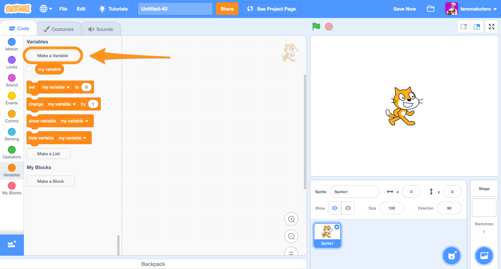
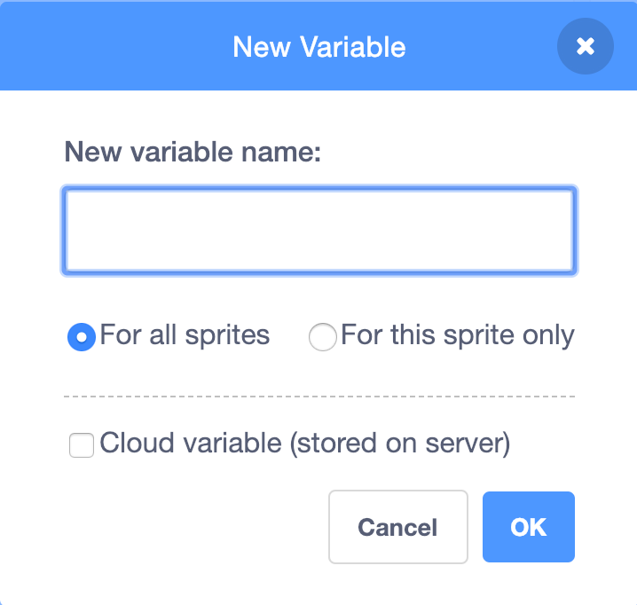
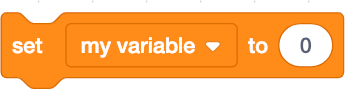

Variable
A variable is a storage location for a value in the computer's memory. In Scratch, a variable is an oval-shaped block that you can name yourself. There are both local and general (global) variables. The local variable is used only with one Sprite. The global variable can be used in all Sprites.
Examples of variables in Scratch
Go to the Variables Blocks and click on the "Create variable" icon.
Give the variable a name and choose if it only applies to this Sprite or to all Sprites.
This block indicates the value of the variable.
This variable specifies a certain value for the variable.
This block changes the variable's value a certain amount.